Creación de un Certificado SSL/TLS Multisitio en AlmaLinux 9¶
Introducción¶
En esta práctica realizaremos las siguientes actividades:
- Crear una Autoridad de Certificación (CA) para firmar certificados.
- Generar una solicitud de firma de certificado (CSR) para un servidor web que funcionará en varios dominios.
- Instalar el certificado generado en un servidor web.
Utilizaremos la herramienta XCA para la creación, revocación y almacenamiento de certificados digitales. XCA está disponible en los repositorios de muchas distribuciones GNU/Linux y también para Windows y Mac. Puedes descargar la versión para Windows desde la página oficial de descargas de XCA.
En nuestro caso, realizaremos la práctica en una máquina virtual con AlmaLinux.
Enunciado¶
0. Instalación de entorno gráfico¶
Hasta ahora no hemos usado entorno gráfico en Alma linux para instalarlo:
Comprobamos los "package groups" que hay disponibles en AlmaLinux:
Veremos que hay un grupo disponible llamado `Server with GUI.Para instalarlo:
Podremos iniciar el modo gráfico con el comando:
Podemos cambiar el modo de arranque a modo gráfico con el comando:
En el próximo reinicio el sistema arrancará en modo gráfico directemente.
Guest Additions (Opcional)¶
Primero actualizamos e instalamos dependencias necesarias:
sudo dnf update -y
sudo dnf install kernel-headers kernel-devel gcc cpp perl make elfutils-libelf-devel
Insertamos la ISO en la unidad virttual:
Dispositivos->Insertar imagen CD de los complementos de invitado
Nos preguntará si queremos ejecutar el CD, le diremos que sí. Si no se ejecutara automáticamente ejecutaríamos el siguiente comando:
VBoxLinuxAdditions.run
Una vez terminado, reinicia.
1. Instalación de XCA en AlmaLinux¶
-
Install the dependencies
# Bookworm sudo apt install build-essential libssl-dev pkg-config cmake qttools5-dev python3-sphinxcontrib.qthelp # Bullseye sudo apt install build-essential libssl-dev pkg-config cmake qttools5-dev python3-sphinx # Either Qt5 sudo apt install qtbase5-dev qttools5-dev-tools libqt5sql5 libqt5help5 qttools5-dev # Or Qt6 sudo apt install qt6-base-dev qt6-tools-dev -
Clone:
git clone https://github.com/chris2511/xca.git - Configure:
cmake -B build xca - Make:
cmake --build build -j5 - Install:
sudo cmake --install build - Or install local and copy later as root:
DESTDIR=DEST cmake --install build --prefix /usr
Ejecutamos XCA:
Toma una captura de pantalla de la interfaz gráfica de XCA una vez abierta.
2. Creación de una Base de Datos en XCA¶
Antes de trabajar con XCA, es necesario crear una base de datos donde se almacenarán y gestionarán todos los certificados que solicitemos o creemos.
- Ve a
Archivo -> Nueva Base de Datos. - Elige un nombre y una ruta para la base de datos.
- Se te pedirá una contraseña para proteger tus certificados y sus claves privadas.
Toma una captura de pantalla de la interfaz de XCA después de haber creado la base de datos.
3. Creación de una Autoridad de Certificación (CA)¶
Con la base de datos creada, podemos generar y tramitar certificados. El primer paso es constituirnos como una CA que podrá certificar y validar certificados digitales de otros usuarios o servidores web.
- En la pestaña
Certificados, haz clic enNuevo Certificadoen el menú de la derecha. - En la ventana que aparece, en la pestaña
Origen, selecciona la plantilla[default] CAy pulsaAplicar a todos. - Como vamos a crear una CA raíz, deja marcada la opción
Crear un certificado autofirmado. - Elige
SHA256como algoritmo de firma (evita usar MD5 o SHA1 por razones de seguridad). - Recuerda pulsar
Aplicar a todos.

4. Configuración de Extensiones y Uso de Clave¶
Al seleccionar la plantilla [default] CA, se configuran automáticamente ciertas opciones:
- En la pestaña
Extensiones, se marcaAutoridad de Certificacióncomo tipo de certificado, con una validez de 10 años (puedes ajustarla si lo deseas). - En la pestaña
Usos de Clave, se seleccionanFirmar CertificadosyFirmar Listas de Revocación (CRL), que son los usos habituales de una CA.
Toma una captura de pantalla de las pestañas Extensiones y Usos de Clave.
5. Completar la Información del Sujeto¶
En la pestaña Sujeto, debes ingresar los campos que te identificarán como CA. Personaliza los campos con tu información y evita usar acentos o caracteres especiales.
Ejemplo:
- País (C): ES
- Estado o Provincia (ST): Alicante
- Localidad (L): Aspe
- Organización (O): IES Villa de Aspe
- Unidad Organizativa (OU): Informática
- Nombre Común (CN): CA NombreApellido (reemplaza
NombreApellidopor tu nombre y apellido)
Toma una captura de pantalla de los datos introducidos.

6. Generación de una Nueva Clave Privada¶
- Pulsa en
Generar una nueva clave. - Selecciona
RSAcomo tipo de clave y establece el tamaño en4096 bitspara mayor seguridad. - Después de generar la clave, pulsa
Crear. Tras unos instantes, se habrá generado tu certificado de CA.
7. Finalización de la Creación de la CA¶
Pulsa Aceptar para completar la creación de la CA.

8. Exportación del Certificado de la CA¶
Necesitamos exportar el certificado de la CA para poder importarlo en la lista de autoridades de certificación confiables de nuestro navegador.
- Selecciona el certificado creado.
- Pulsa
Exportar. - Guarda el certificado con la extensión
.crty en formatoPEM.

9. Importación del Certificado de la CA en el Navegador¶
Para que los navegadores confíen en los certificados emitidos por nuestra CA, debemos importar su certificado en el navegador. En Firefox, sigue estos pasos:
- Ve a
Preferencias(oOpciones) ->Privacidad & Seguridad->Certificados->Ver Certificados. - Selecciona la pestaña
Autoridadesy pulsaImportar. - Busca y selecciona el certificado de tu CA.
- Marca la opción
Confiar en esta CA para identificar sitios weby pulsaAceptar.
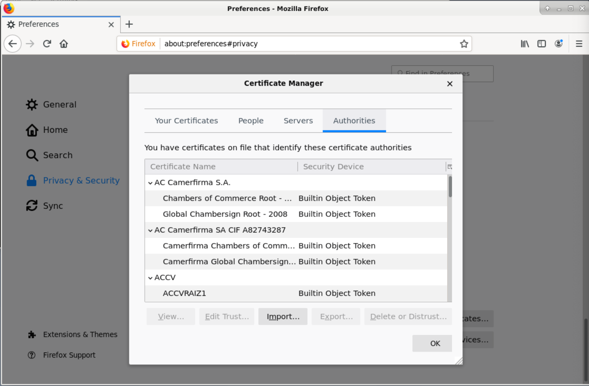
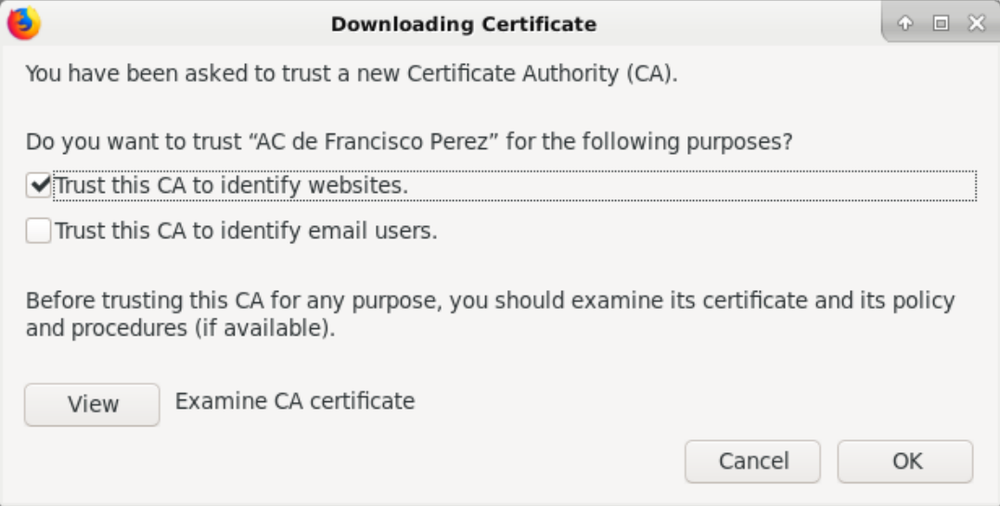
10. Verificación del Certificado de la CA en el Navegador¶
Puedes verificar que el certificado de tu CA ha sido importado correctamente buscando por el nombre de la organización que ingresaste.
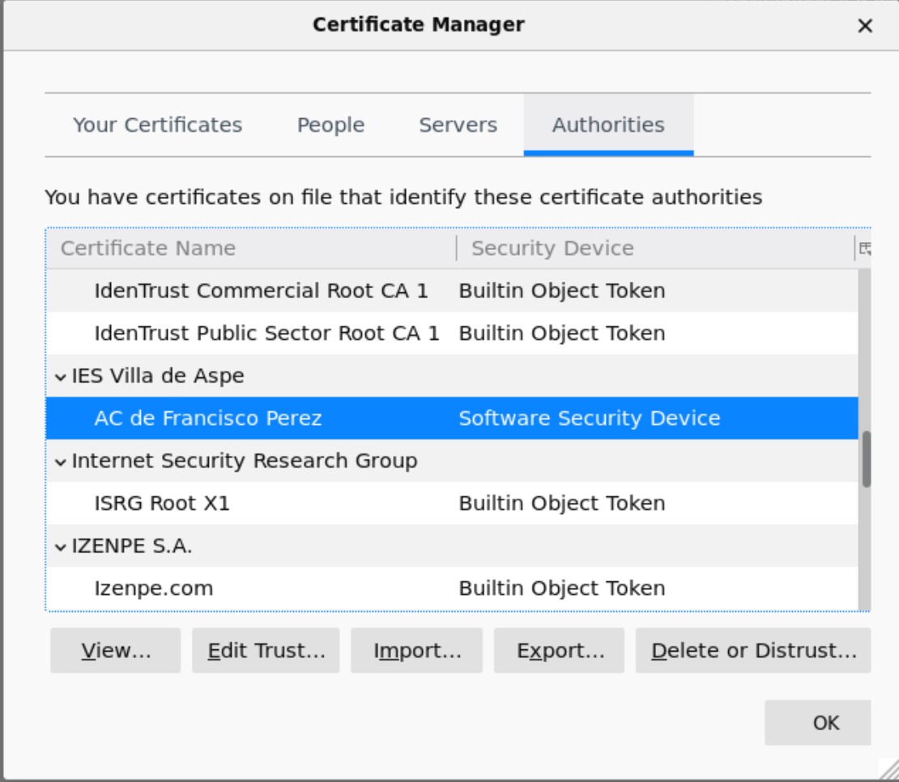
11. Creación de una Solicitud de Firma de Certificado (CSR) para el Servidor Web¶
Vamos a simular que somos una organización con presencia en Internet y necesitamos un certificado digital para nuestro servidor web que responde a varios dominios. Para personalizar la práctica, tu apellido debe aparecer en los dominios (sin acentos y usando solo caracteres ingleses). Por ejemplo, si tu apellido es Pérez, los dominios serían:
- www.servidorperez.com
- www.cursoperez.com
- www.servidorperez.es
- www.cursoperez.es
Procede de la siguiente manera:
- Ve a la pestaña
Solicitudes de Firma de Certificado (CSR)en XCA. - Pulsa
Nueva Solicitud. - Selecciona la plantilla
[default] HTTPS_server(oTLS_server, dependiendo de la versión de XCA). - Elige
SHA256como algoritmo de firma y pulsaAplicar a todos.
12. Completar la Información del Sujeto para el CSR¶
En la pestaña Sujeto, ingresa los datos que identificarán a tu servidor web. Personaliza los campos y evita usar acentos o caracteres especiales. Es fundamental que el Nombre Común (CN) coincida con el dominio principal de tu servidor.
Ejemplo:
- País (C): ES
- Estado o Provincia (ST): Alicante
- Localidad (L): Aspe
- Organización (O): Servidor Perez
- Unidad Organizativa (OU): Web
- Nombre Común (CN): www.servidorperez.com
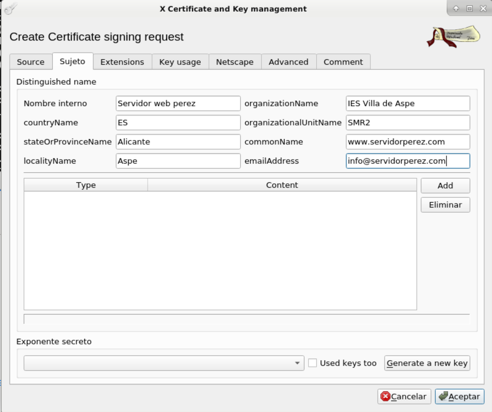
13. Generación de una Nueva Clave Privada para el CSR¶
- En la pestaña
Sujeto, pulsaGenerar una nueva clave. - Deja los valores predeterminados (
RSAy2048 bits). - Pulsa
Crear.
14. Añadir Nombres Alternativos del Sujeto (SAN)¶
En la pestaña Extensiones:
- Pulsa
Editarjunto al campoX509v3 Subject Alternative Name. - En la ventana que aparece, añade los nombres de dominio adicionales que utilizará tu servidor.
Ejemplo:
- DNS: www.servidorperez.com
- DNS: www.cursoperez.com
- DNS: www.servidorperez.es
- DNS: www.cursoperez.es
- DNS: servidorperez.com (opcional)
- DNS: cursoperez.com (opcional)
Nota: Puedes usar comodines (*) en los nombres de dominio, por ejemplo, *.servidorperez.com, pero ten en cuenta las políticas de uso de certificados en entornos reales.
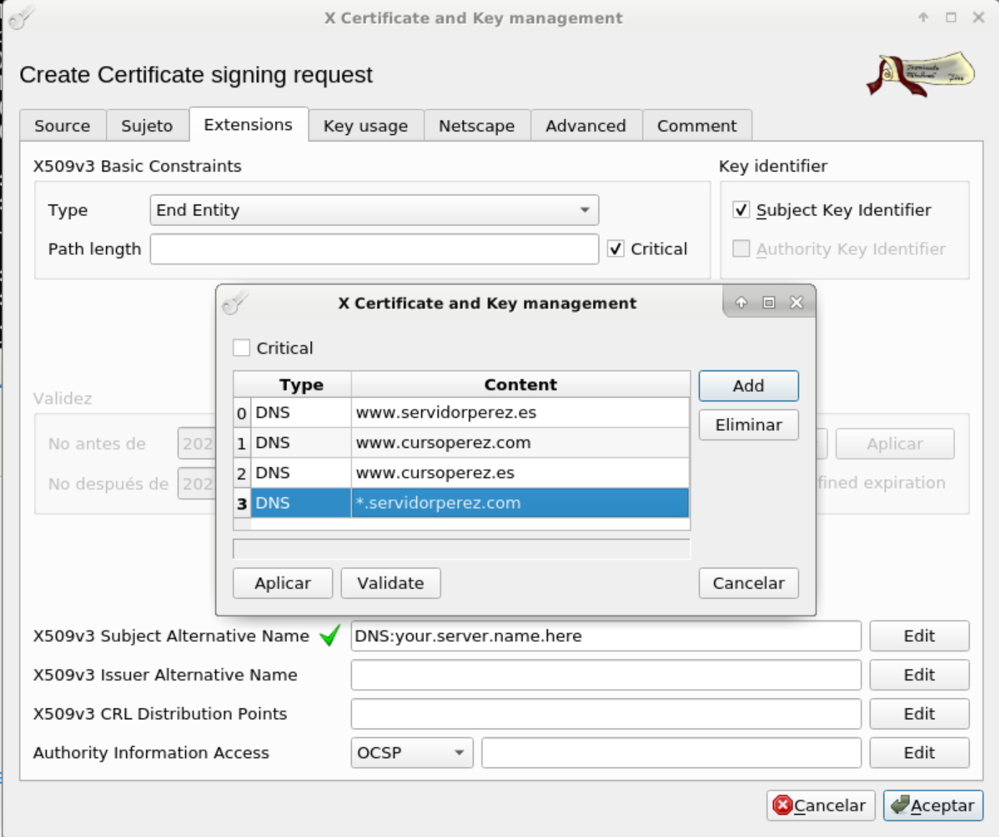
15. Creación de la CSR¶
- Pulsa
Aplicary luegoAceptar. - La nueva CSR aparecerá en la pestaña
Solicitudes de Firma de Certificado, pendiente de firma.
16. Firma del CSR con tu CA¶
Como somos nuestra propia CA, procederemos a firmar la CSR:
- Selecciona la CSR creada y haz clic derecho para seleccionar
Firmar. - En el asistente de firma:
- Aplica la plantilla
HTTPS_server(oTLS_Server). - Selecciona
SHA256como algoritmo de firma. - Elige tu CA en
Usar este Certificado para firmar.
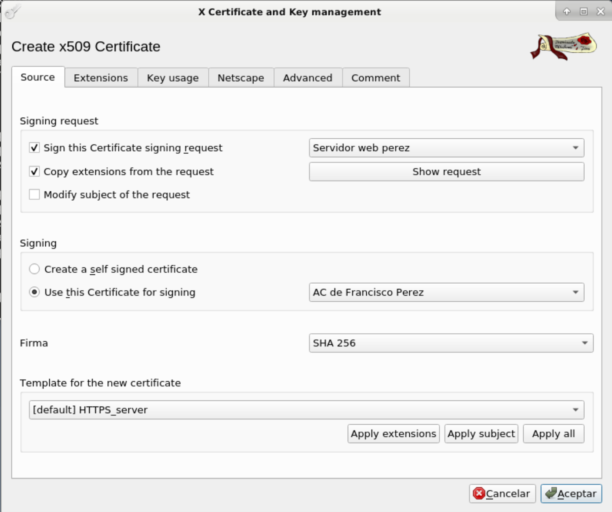
17. Verificación y Ajuste de Extensiones¶
- Asegúrate de que la opción
Copiar extensiones de la solicitudesté marcada para incluir las extensiones como los SAN. - Si las extensiones no se copian automáticamente, agrégalas manualmente en la pestaña
Extensiones, siguiendo el mismo procedimiento que en el paso 14.
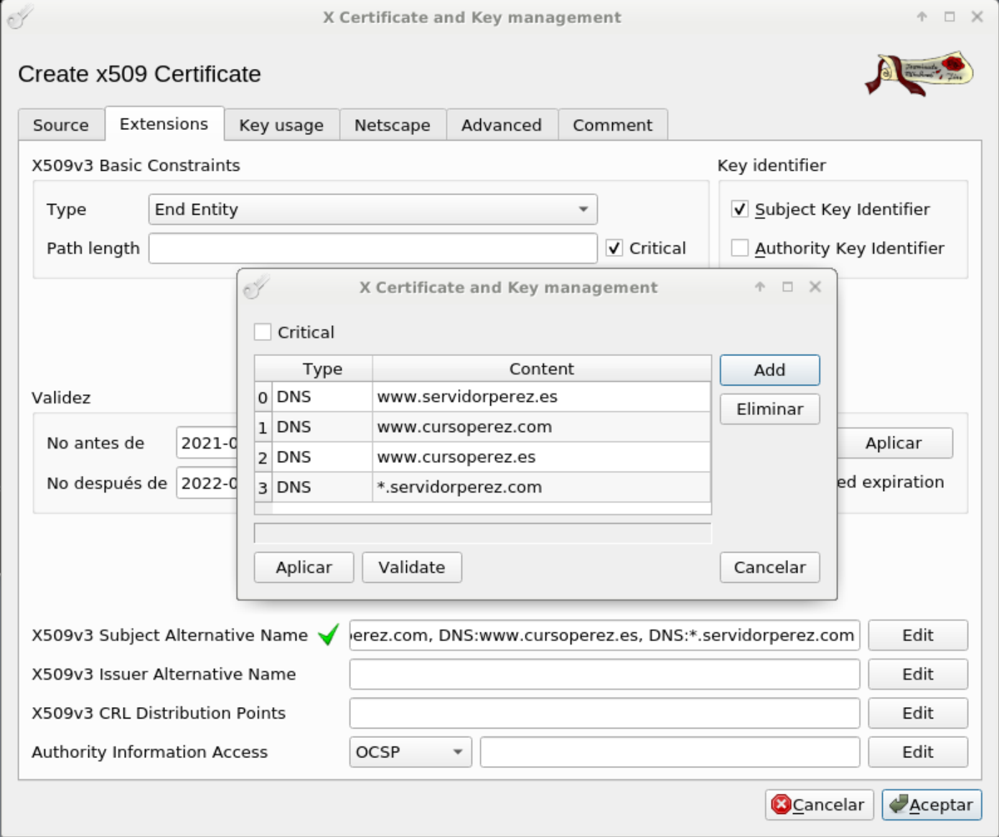
18. Generación del Certificado¶
- Pulsa
Aceptarpara generar el certificado. - El certificado aparecerá en la pestaña
Certificados, asociado a tu CA en la jerarquía.
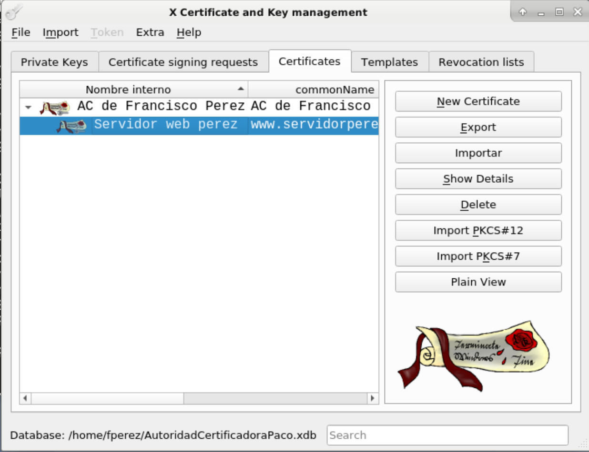
19. Exportación del Certificado y la Clave Privada¶
- Exporta el certificado del servidor en formato PEM con extensión
.crt. - Exporta la clave privada asociada en formato PEM con extensión
.key.
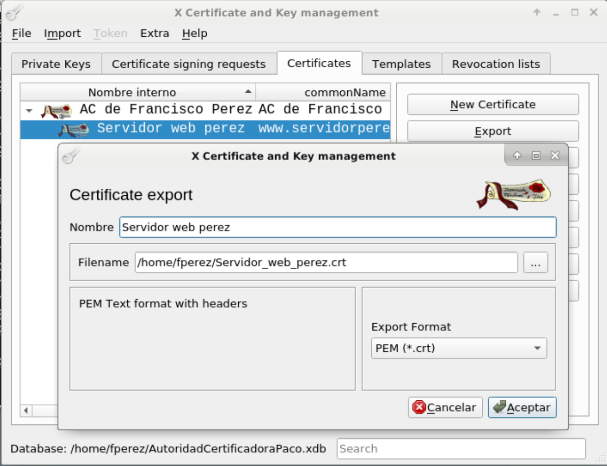
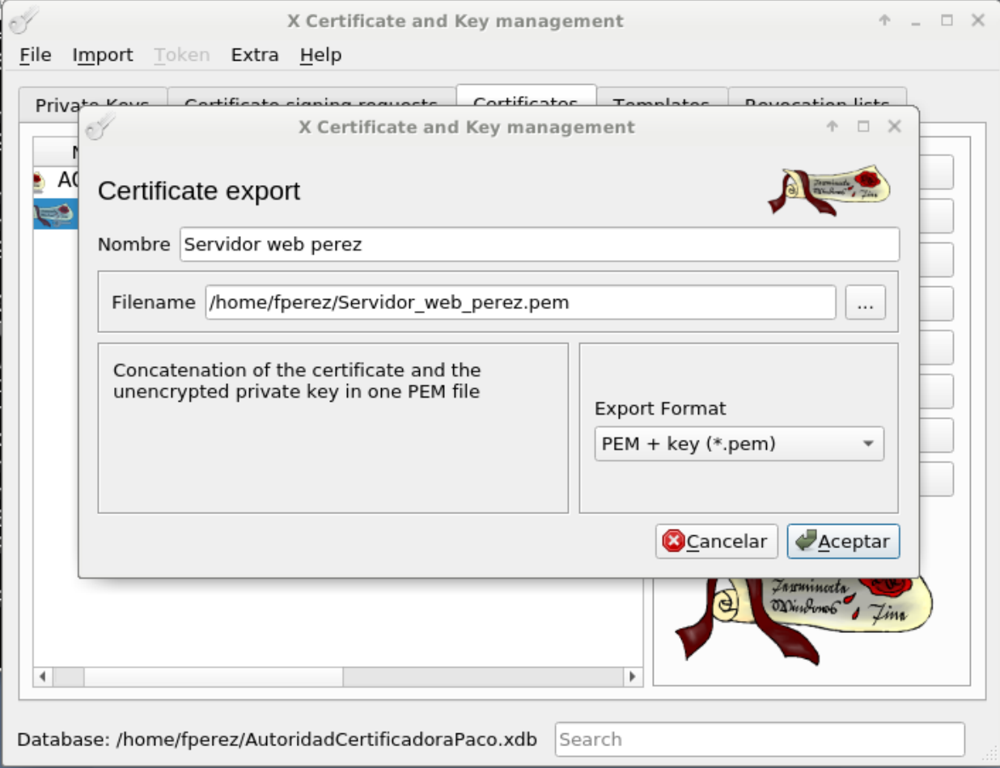
20. Copia de Archivos al Directorio Adecuado¶
Copia el certificado y la clave privada a los directorios correspondientes en AlmaLinux:
sudo cp Servidor_web_perez.crt /etc/pki/tls/certs/
sudo cp Servidor_web_perez.key /etc/pki/tls/private/
Asegúrate de establecer los permisos y propietarios correctos para la clave privada:
sudo chmod 600 /etc/pki/tls/private/Servidor_web_perez.key
sudo chown root:root /etc/pki/tls/private/Servidor_web_perez.key
21. Instalación y Configuración de Apache con Soporte SSL¶
- Instala Apache y el módulo SSL:
- Habilita e inicia el servicio de Apache:
22. Configuración de Apache para Usar el Certificado SSL¶
- Edita el archivo de configuración SSL de Apache:
- Modifica las directivas para que apunten a los archivos que hemos copiado:
SSLCertificateFile /etc/pki/tls/certs/Servidor_web_perez.crt
SSLCertificateKeyFile /etc/pki/tls/private/Servidor_web_perez.key
SSLCertificateChainFile /etc/pki/tls/certs/CA_NombreApellido.crt
Asegúrate de que SSLEngine esté habilitado:

23. Apertura del Puerto 443 en el Firewall¶
- Permite el tráfico HTTPS en el firewall:
24. Reinicio de Apache¶
- Para aplicar los cambios, reinicia el servicio de Apache:
25. Edición del Archivo hosts para Simular los Dominios¶
- Edita el archivo
/etc/hostspara que los dominios resuelvan a127.0.0.1:
- Añade la siguiente línea (reemplaza los dominios con los que hayas utilizado):
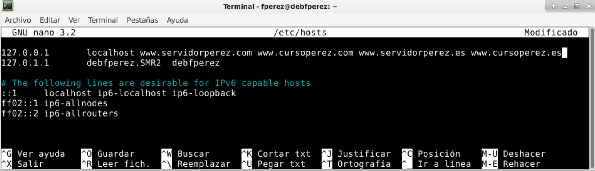
26. Comprobación del Acceso HTTPS¶
- Abre tu navegador y accede a
https://www.servidorperez.com. - Deberías ver la página por defecto de Apache sin alertas de seguridad, ya que el certificado es reconocido y válido para ese dominio.
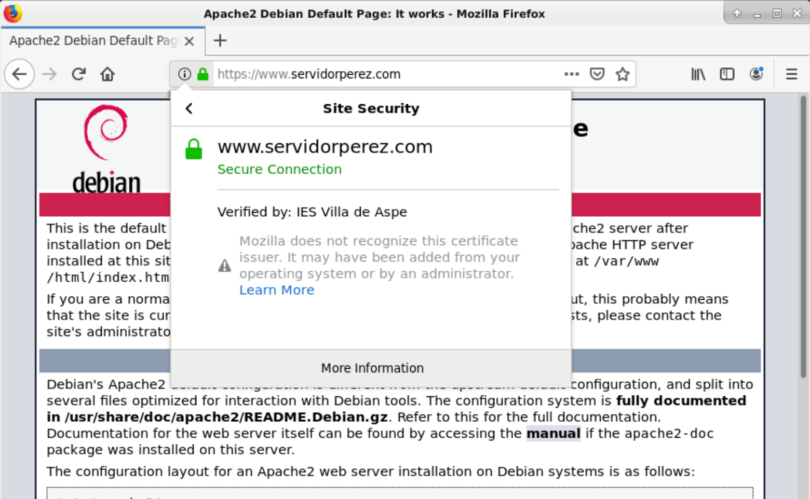
27. Prueba con Dominios No Incluidos en el Certificado¶
- Intenta acceder a
https://www.otrodominio.com(asegúrate de añadirlo en el archivo hosts apuntando a127.0.0.1). - El navegador debería mostrar una alerta de seguridad indicando que el certificado no es válido para ese dominio.
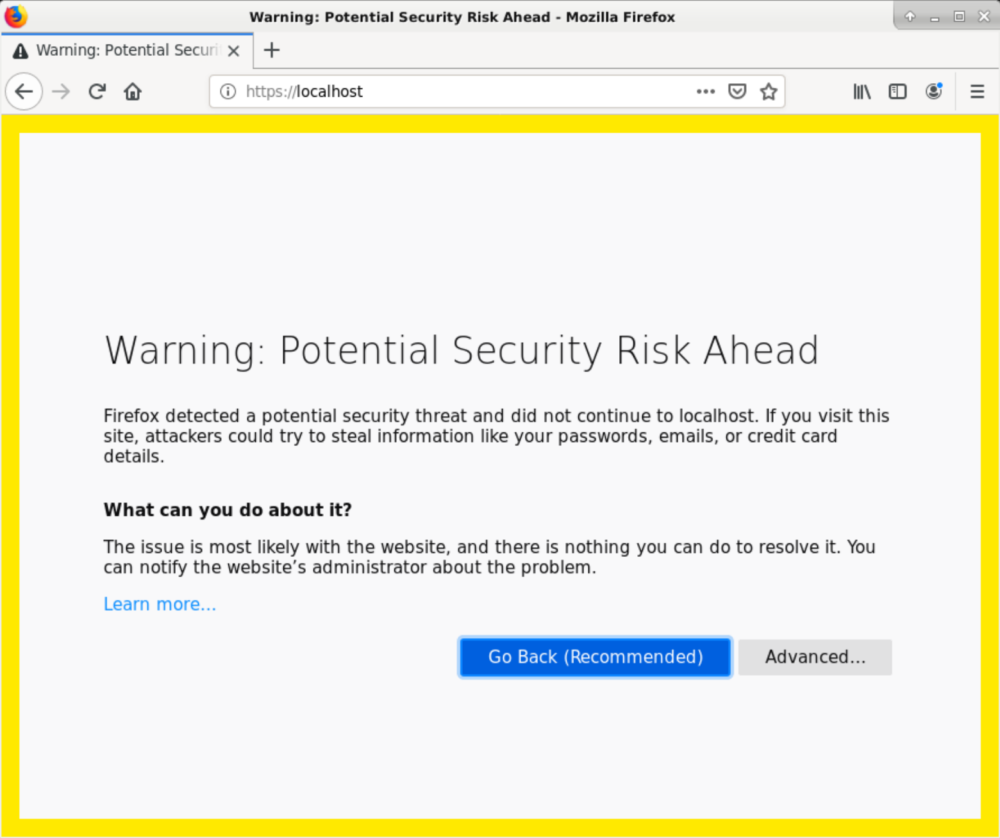
Conclusión¶
Has completado la práctica adaptada para AlmaLinux 9, creando una Autoridad de Certificación, generando un certificado SSL/TLS multisitio y configurando un servidor web Apache para utilizarlo. Este proceso es esencial para comprender cómo funcionan los certificados digitales y cómo asegurar sitios web en entornos empresariales.
Notas Adicionales:
- Seguridad de las Claves Privadas: Es crucial proteger las claves privadas, estableciendo permisos adecuados y restringiendo el acceso solo a usuarios autorizados.
- Entornos de Producción: En entornos reales, los certificados deben ser emitidos por una CA reconocida públicamente para que los navegadores los consideren confiables sin necesidad de importarlos manualmente.
- Actualización de Paquetes y Dependencias: Siempre verifica que los paquetes y dependencias estén actualizados para garantizar la compatibilidad y seguridad del sistema.
- Políticas de Certificados: Al usar comodines en certificados SSL/TLS, asegúrate de cumplir con las políticas y estándares establecidos para evitar problemas de seguridad.